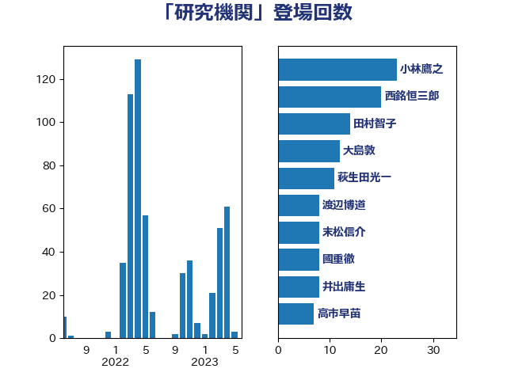

単語「研究機関」

| 小林鷹之 | 自由民主党 | 23 回 |
| 西銘恒三郎 | 自由民主党 | 20 回 |
| 田村智子 | 日本共産党 | 14 回 |
| 大島敦 | 立憲民主党 | 12 回 |
| 萩生田光一 | 自由民主党 | 11 回 |
| 渡辺博道 | 自由民主党 | 8 回 |
| 末松信介 | 自由民主党 | 8 回 |
| 國重徹 | 公明党 | 8 回 |
| 井出庸生 | 自由民主党 | 8 回 |
| 高市早苗 | 自由民主党 | 7 回 |
| 福島伸享 | 無所属 | 7 回 |
| 永岡桂子 | 自由民主党 | 7 回 |
| 三木圭恵 | 日本維新の会 | 7 回 |
| 進藤金日子 | 自由民主党 | 6 回 |
| 柴田巧 | 日本維新の会 | 6 回 |
| 斉藤鉄夫 | 公明党 | 6 回 |
| 神谷裕 | 立憲民主党 | 5 回 |
| 後藤茂之 | 自由民主党 | 5 回 |
| 小沼巧 | 立憲民主党 | 5 回 |
| 宮本徹 | 日本共産党 | 5 回 |
| 馬場雄基 | 立憲民主党 | 4 回 |
| 石原正敬 | 自由民主党 | 4 回 |
| 玄葉光一郎 | 立憲民主党 | 4 回 |
| 浅野哲 | 国民民主党 | 4 回 |
| 浅川義治 | 日本維新の会 | 4 回 |
| 大西健介 | 立憲民主党 | 4 回 |
| 国光あやの | 自由民主党 | 4 回 |
| 加藤勝信 | 自由民主党 | 4 回 |
| 高橋はるみ | 自由民主党 | 3 回 |
| 金子恵美 | 立憲民主党 | 3 回 |
| 角田秀穂 | 公明党 | 3 回 |
| 藤岡隆雄 | 立憲民主党 | 3 回 |
| 紙智子 | 日本共産党 | 3 回 |
| 空本誠喜 | 日本維新の会 | 3 回 |
| 渡辺創 | 立憲民主党 | 3 回 |
| 岸田文雄 | 自由民主党 | 3 回 |
| 岡田直樹 | 自由民主党 | 3 回 |
| 山口壯 | 自由民主党 | 3 回 |
| 尾身朝子 | 自由民主党 | 3 回 |
| 吉良よし子 | 日本共産党 | 3 回 |
| 亀岡偉民 | 自由民主党 | 3 回 |
| 下野六太 | 公明党 | 3 回 |
| 音喜多駿 | 日本維新の会 | 2 回 |
| 野村哲郎 | 自由民主党 | 2 回 |
| 里見隆治 | 公明党 | 2 回 |
| 赤池誠章 | 自由民主党 | 2 回 |
| 若松謙維 | 公明党 | 2 回 |
| 芳賀道也 | 国民民主党 | 2 回 |
| 舩後靖彦 | れいわ新選組 | 2 回 |
| 緑川貴士 | 立憲民主党 | 2 回 |
| 竹谷とし子 | 公明党 | 2 回 |
| 竹内真二 | 公明党 | 2 回 |
| 秋葉賢也 | 自由民主党 | 2 回 |
| 田村貴昭 | 日本共産党 | 2 回 |
| 田村まみ | 国民民主党 | 2 回 |
| 牧島かれん | 自由民主党 | 2 回 |
| 瀬戸隆一 | 自由民主党 | 2 回 |
| 渡辺周 | 立憲民主党 | 2 回 |
| 横山信一 | 公明党 | 2 回 |
| 川田龍平 | 立憲民主党 | 2 回 |
| 小野泰輔 | 日本維新の会 | 2 回 |
| 小泉進次郎 | 自由民主党 | 2 回 |
| 大野敬太郎 | 自由民主党 | 2 回 |
| 塩川鉄也 | 日本共産党 | 2 回 |
| 和田有一朗 | 日本維新の会 | 2 回 |
| 吉田統彦 | 立憲民主党 | 2 回 |
| 古屋範子 | 公明党 | 2 回 |
| 仁木博文 | 無所属 | 2 回 |
| 中谷一馬 | 立憲民主党 | 2 回 |
| 上田清司 | 国民民主党 | 2 回 |
| 三浦信祐 | 公明党 | 2 回 |
| たがや亮 | れいわ新選組 | 2 回 |
| 高橋光男 | 公明党 | 1 回 |
| 青山繁晴 | 自由民主党 | 1 回 |
| 青山大人 | 立憲民主党 | 1 回 |
| 阿部司 | 日本維新の会 | 1 回 |
| 鈴木義弘 | 国民民主党 | 1 回 |
| 鈴木淳司 | 自由民主党 | 1 回 |
| 鈴木庸介 | 立憲民主党 | 1 回 |
| 赤嶺政賢 | 日本共産党 | 1 回 |
| 西村智奈美 | 立憲民主党 | 1 回 |
| 西村康稔 | 自由民主党 | 1 回 |
| 菊田真紀子 | 立憲民主党 | 1 回 |
| 菅家一郎 | 自由民主党 | 1 回 |
| 荒井優 | 立憲民主党 | 1 回 |
| 羽生田俊 | 自由民主党 | 1 回 |
| 笠井亮 | 日本共産党 | 1 回 |
| 穂坂泰 | 自由民主党 | 1 回 |
| 稲津久 | 公明党 | 1 回 |
| 秋本真利 | 自由民主党 | 1 回 |
| 福重隆浩 | 公明党 | 1 回 |
| 礒崎哲史 | 国民民主党 | 1 回 |
| 石橋通宏 | 立憲民主党 | 1 回 |
| 石川昭政 | 自由民主党 | 1 回 |
| 石原宏高 | 自由民主党 | 1 回 |
| 石井苗子 | 日本維新の会 | 1 回 |
| 滝波宏文 | 自由民主党 | 1 回 |
| 浜田靖一 | 自由民主党 | 1 回 |
| 沢田良 | 日本維新の会 | 1 回 |
| 池畑浩太朗 | 日本維新の会 | 1 回 |
| 池田佳隆 | 自由民主党 | 1 回 |
| 水野素子 | 立憲民主党 | 1 回 |
| 武部新 | 自由民主党 | 1 回 |
| 梶原大介 | 自由民主党 | 1 回 |
| 柳本顕 | 自由民主党 | 1 回 |
| 東徹 | 日本維新の会 | 1 回 |
| 本田顕子 | 自由民主党 | 1 回 |
| 新垣邦男 | 立憲民主党 | 1 回 |
| 斎藤洋明 | 自由民主党 | 1 回 |
| 斎藤アレックス | 国民民主党 | 1 回 |
| 掘井健智 | 日本維新の会 | 1 回 |
| 徳永エリ | 立憲民主党 | 1 回 |
| 平将明 | 自由民主党 | 1 回 |
| 岸真紀子 | 立憲民主党 | 1 回 |
| 岩渕友 | 日本共産党 | 1 回 |
| 岡本あき子 | 立憲民主党 | 1 回 |
| 山谷えり子 | 自由民主党 | 1 回 |
| 山田勝彦 | 立憲民主党 | 1 回 |
| 小野寺五典 | 自由民主党 | 1 回 |
| 小沢雅仁 | 立憲民主党 | 1 回 |
| 小池晃 | 日本共産党 | 1 回 |
| 宮本岳志 | 日本共産党 | 1 回 |
| 宮口治子 | 立憲民主党 | 1 回 |
| 宮下一郎 | 自由民主党 | 1 回 |
| 奥下剛光 | 日本維新の会 | 1 回 |
| 大家敏志 | 自由民主党 | 1 回 |
| 塩田博昭 | 公明党 | 1 回 |
| 堂込麻紀子 | 無所属 | 1 回 |
| 坂本祐之輔 | 立憲民主党 | 1 回 |
| 和田義明 | 自由民主党 | 1 回 |
| 吉田はるみ | 立憲民主党 | 1 回 |
| 古川直季 | 自由民主党 | 1 回 |
| 友納理緒 | 自由民主党 | 1 回 |
| 加藤竜祥 | 自由民主党 | 1 回 |
| 加田裕之 | 自由民主党 | 1 回 |
| 前原誠司 | 国民民主党 | 1 回 |
| 伊藤孝恵 | 国民民主党 | 1 回 |
| 伊東信久 | 日本維新の会 | 1 回 |
| 中西祐介 | 自由民主党 | 1 回 |
| 中島克仁 | 立憲民主党 | 1 回 |
| 一谷勇一郎 | 日本維新の会 | 1 回 |